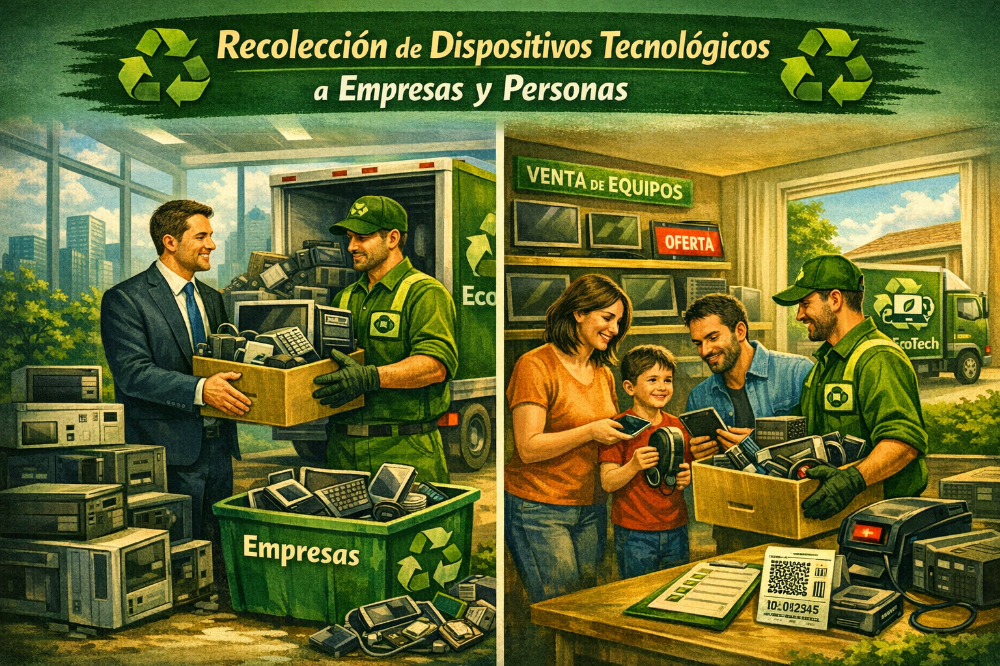
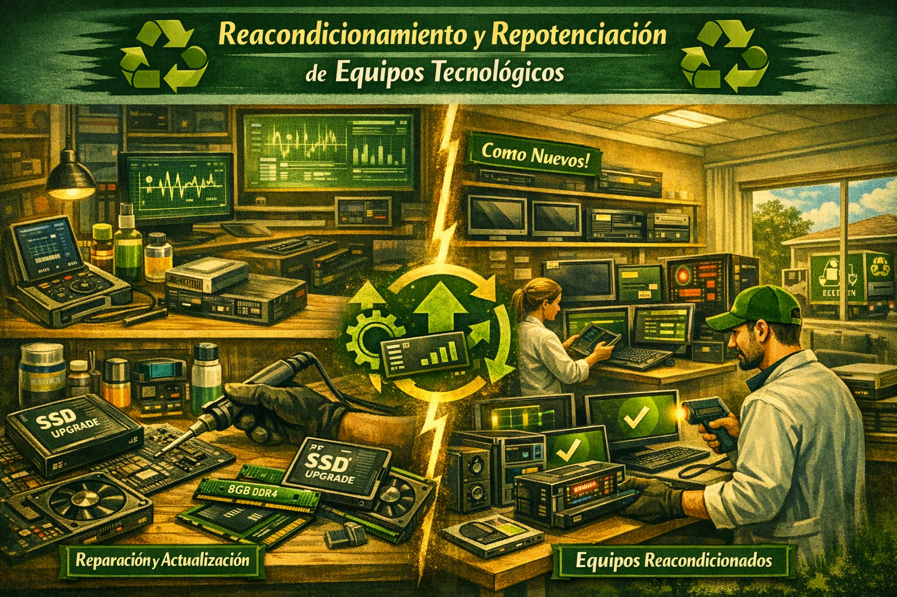
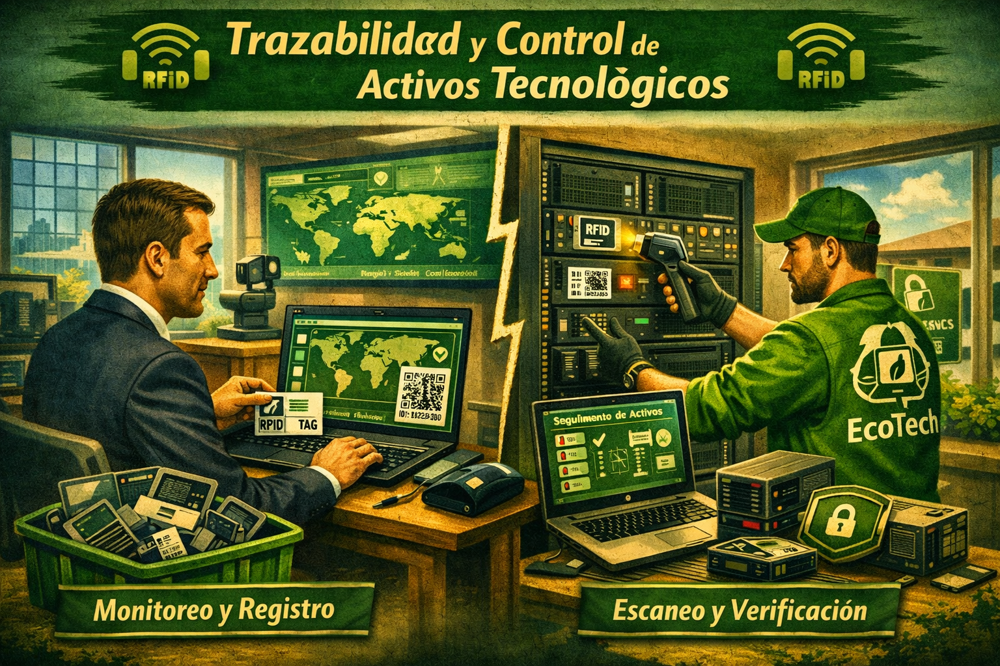

Nuestros Servicios
Recolección de Residuos Electrónicos

En EcoTech desarrollamos un servicio especializado de recolección de residuos de aparatos eléctricos y electrónicos (RAEE), diseñado para garantizar una gestión segura, eficiente y ambientalmente responsable desde el punto de origen. Nuestro enfoque abarca hogares, empresas e instituciones que requieren una solución confiable para la disposición de sus equipos tecnológicos en desuso.
El proceso inicia con la identificación y clasificación de los dispositivos, incluyendo computadores, celulares, impresoras, servidores y periféricos, seguido de una logística de recolección optimizada que reduce tiempos, costos operativos y emisiones asociadas al transporte. Cada retiro se realiza bajo protocolos que aseguran la manipulación adecuada de los equipos, evitando daños adicionales o liberación de sustancias contaminantes.
Adicionalmente, implementamos estrategias de sensibilización dirigidas a los usuarios, fomentando la cultura del reciclaje tecnológico y la correcta disposición de residuos electrónicos. Este servicio no solo contribuye a la reducción del impacto ambiental, sino que también permite a las organizaciones cumplir con normativas vigentes relacionadas con la gestión de residuos peligrosos.
Como valor agregado, EcoTech ofrece documentación y certificación del proceso de recolección, garantizando trazabilidad inicial y respaldo ante auditorías ambientales, fortaleciendo así la responsabilidad social y corporativa de nuestros clientes.
Reacondicionamiento Tecnológico

El servicio de reacondicionamiento de EcoTech se enfoca en la recuperación funcional de equipos electrónicos mediante un conjunto de procesos técnicos especializados que permiten prolongar su ciclo de vida útil. Este servicio constituye un pilar fundamental dentro del modelo de economía circular, al reducir la generación de residuos y maximizar el aprovechamiento de los recursos tecnológicos existentes.
Cada dispositivo es sometido a un diagnóstico integral que evalúa su estado físico y lógico, identificando fallas en componentes de hardware y software. Posteriormente, se ejecutan procesos de reparación, sustitución de piezas, limpieza interna, actualización de sistemas operativos y optimización del rendimiento general del equipo.
Los equipos reacondicionados son sometidos a pruebas de calidad que garantizan su correcto funcionamiento antes de ser reintegrados al mercado o destinados a iniciativas sociales. Esto permite ofrecer soluciones tecnológicas accesibles a bajo costo, reduciendo la brecha digital en comunidades con recursos limitados.
Además, este proceso contribuye significativamente a la disminución de la huella ambiental asociada a la fabricación de nuevos dispositivos, posicionando a EcoTech como un agente activo en la sostenibilidad tecnológica y la innovación responsable.
Trazabilidad y Seguimiento

EcoTech implementa un sistema avanzado de trazabilidad que permite monitorear de manera precisa cada etapa del ciclo de vida de los dispositivos electrónicos gestionados, desde su recolección hasta su disposición final o reacondicionamiento. Este sistema garantiza transparencia, control y confiabilidad en todos los procesos.
A través de herramientas digitales, se registra información detallada de cada equipo, incluyendo su origen, tipo, estado, tratamiento aplicado y destino final. Esto permite generar reportes personalizados y brindar a los usuarios visibilidad completa sobre el manejo de sus residuos tecnológicos.
La trazabilidad no solo fortalece la confianza del cliente, sino que también facilita el cumplimiento de estándares ambientales y regulatorios, permitiendo auditorías más eficientes y una mejor toma de decisiones basada en datos.
Adicionalmente, el sistema permite cuantificar el impacto positivo generado, como la reducción de residuos electrónicos, el volumen de equipos recuperados y la disminución de emisiones contaminantes, consolidando así el compromiso de EcoTech con la sostenibilidad y la responsabilidad ambiental.